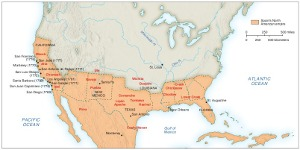
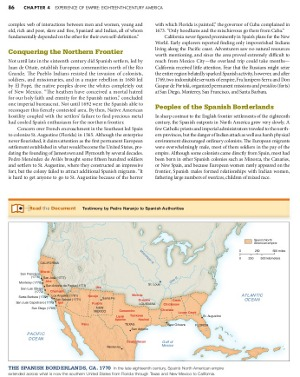
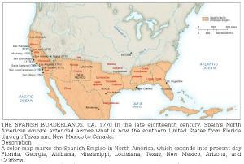
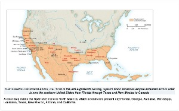
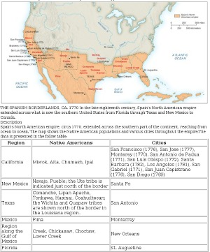

Sample 2: Map of North America

View a larger version of this image.
This map of North America in the 1770s is taken from a postsecondary history textbook. The full page where it appears can be seen below.

View a larger version of this image.
Making This Image Accessible
This image can be made accessible by using different levels of descriptive text. The first, a short description, is useful for describing the first level of instructional meaning, which in this case is the location of the border of the Spanish Empire. The second, a longer description that includes tabular data, is used to convey all of the information available in the map.
When and why are short descriptions and long descriptions used? A long description may be required given the nature and complexity of the image and the information it conveys. Even when a long description is used, a short description may still be necessary. A caption or a short description should provide enough information for the reader to decide whether to read the long description or not. If the caption conveys sufficient information and is live text, not embedded in the image, a short description may not be needed.
How this image description is displayed depends on the reading tool being used. In most mainstream reading tools, the description will not be displayed at all, but in tools designed for accessibility (or mainstream tools with accessibility features enabled), the description could be displayed below the image, voiced as part of the content, or both.
The choice of modality varies depending on factors such as the information to be conveyed, grade level, student knowledge and experience, and the image itself. In this case, a tactile graphic is not needed to make this image accessible for braille readers for two reasons: First, because this is a postsecondary text, it is assumed that the reader has more background information and experience than a younger reader would have. Second, the purpose of this image is to identify the Spanish Empire, and this data can be easily understood from a table.
If the caption is embedded in the image, it will not be readable as live text by the user's assistive technology. The information in the caption needs to be included in the description.
Internal experts disagreed about whether to identify the Caribbean islands in the image descriptions. In the image, the islands are shaded as part of the Spanish North American empire, but they are not labeled. In the end, we decided to leave them out of the description since they are not the focus of the image.
Short Text or Audio Description
A color map marks the Spanish Empire in North America, which extends into present-day Florida, Georgia, Alabama, Mississippi, Louisiana, Texas, New Mexico, Arizona, and California.
EPUB 3

View a larger version of this image.
The image above shows how the short image description would look when implemented in an EPUB 3 file. The code used to create it is:
<figure aria-describedby="map-desc">
<img src="images/images/map.jpg" alt="map of the Spanish Empire ca. 1770"/>
<figcaption>
<p>
THE SPANISH BORDERLANDS, CA. 1770 In the late eighteenth century, Spain's North American empire
extended across what is now the southern United States from Florida through Texas and New Mexico to
Canada.
</p>
<details id="map-desc">
<summary>Description</summary>
<p>
A color map marks the Spanish Empire in North America, which extends into present-day Florida, Georgia,
Alabama, Mississippi, Louisiana, Texas, New Mexico, Arizona, and Califoria.
</p>
</details>
</figcaption>
</figure>
DAISY

View a larger version of this image.
The image above shows how the short image description would look when implemented in a DAISY file. The code used to create it is:
<imggroup><p><img id="map1" src="images/map.jpg" alt="map of the Spanish Empire" /></p>
<caption>
THE SPANISH BORDERLANDS, CA. 1770 In the late eighteenth century, Spain's North American empire
extended across what is now the southern United States from Florida through Texas and New Mexico to
Canada.
</caption>
<prodnote id="prodnote_000001">
<p smilref="map.smil#p_000001">
A color map marks the Spanish Empire in North America, which extends into present-day Florida, Georgia,
Alabama, Mississippi, Louisiana, Texas, New Mexico, Arizona, and Califoria.
</prodnote></imggroup>
Long Text or Audio Description
Spain's North American empire, circa 1770, extended across the southern part of the continent, reaching from ocean to ocean. The map shows the Native American populations and various cities throughout the empire. The data is presented in the following table:
Region | Native Americans | Cities |
California | Miwok, Alta, Chumash, Ipal | San Francisco (1776), San Jose (1777), Monterey (1770), San Antonio de Padua (1771), San Luis Obispo (1772), Santa Barbara (1782), Los Angeles (1781), San Gabriel (1771), San Juan Capistrano (1776), San Diego (1769) |
New Mexico | Navajo, Pueblo; the Ute tribe is indicated just north of the border | Santa Fe |
Texas | Comanche, Lipan Apache, Tonkawa, Hasinai, Coahuiltecan; the Wichita and Quapaw tribes are shown north of the border in the Louisiana region. | San Antonio |
Mexico | Pima | Monterrey |
Region along the Gulf of Mexico | Creek, Chickasaw, Choctaw, Lower Creek | New Orleans |
Florida |
| St. Augustine |
EPUB 3

View a larger version of this image.
The image above shows how the long image description could look when implemented in an EPUB 3 file. The code used to create it is:
<figure aria-describedby="map-desc"> <img src="images/images/map.jpg" alt="map of the Spanish Empire ca. 1770"/> <figcaption> <p> THE SPANISH BORDERLANDS, CA. 1770 In the late eighteenth century, Spain's North American empire extended across what is now the southern United States from Florida through Texas and New Mexico to Canada. </p> <details id="map_desc"> <summary>Description</summary> <p> Spain's North American empire, circa 1770, extended across the southern part of the continent, reaching from ocean to ocean. The map shows the Native American populations and various cities throughout the empire. The data is presented in the follow table: </p> <table border="1"> <thead><tr><th><p>Region</p></th><th><p>Native Americans</p></th><th><p>Cities</p></th></tr></thead> <tr><td><p>California</p></td><td><p>Miwok, Alta, Chumash, Ipal</p></td><td><p>San Francisco (1776), San Jose (1777), Monterey (1770), San Antonio de Padua (1771), San Luis Obispo (1772), Santa Barbara (1782), Los Angeles (1781), San Gabriel (1771), San Juan Capistrano (1776), San Diego (1769)</p></td></tr> <tr><td><p>New Mexico</p></td><td><p>Navajo, Pueblo; the Ute tribe is indicated just north of the border</p></td><td><p>Santa Fe</p></td></tr> <tr><td><p>Texas</p></td><td><p>Comanche, Lipan Apache, Tonkawa, Hasinai, Coahuiltecan; the Wichita and Quapaw tribes are shown north of the border in the Louisiana region.</p> </td><td><p>San Antonio</p></td></tr> <tr><td><p>Mexico</p></td><td><p>Pima</p></td><td><p>Monterrey</p></td></tr> <tr><td><p>Region along the Gulf of Mexico</p></td><td><p>Creek, Chickasaw, Choctaw, Lower Creek</p></td><td><p>New Orleans</p></td></tr> <tr><td><p>Florida</p></td><td><p> </p></td><td><p>St. Augustine</p></td></tr> </table> </details> </figcaption> </figure>
DAISY

View a larger version of this image.
The image above shows how the long image description would look when implemented in a DAISY file. The code used to create it is:
<imggroup><p><img id="map1" src="images/map.jpg" alt="map of the Spanish Empire" /></p> <caption imgref="map1"> THE SPANISH BORDERLANDS, CA. 1770 In the late eighteenth century, Spain's North American empire extended across what is now the southern United States from Florida through Texas and New Mexico to Canada. </caption> <prodnote id="prodnote_000001"> <p smilref="map.smil#p_000001"> Spain's North American empire, circa 1770, extended across the southern part of the continent, reaching from ocean to ocean. The map shows the Native American populations and various cities throughout the empire. The data is presented in the following table: </p> <table border="1"> <thead><tr><th><p>Region</p></th><th><p>Native Americans</p></th><th><p>Cities</p></th></tr></thead> <tr><td><p>California</p></td><td><p>Miwok, Alta, Chumash, Ipal</p></td><td><p>San Francisco (1776), San Jose (1777), Monterey (1770), San Antonio de Padua (1771), San Luis Obispo (1772), Santa Barbara (1782), Los Angeles (1781), San Gabriel (1771), San Juan Capistrano (1776), San Diego (1769)</p></td></tr> <tr><td><p>New Mexico</p></td><td><p>Navajo, Pueblo; the Ute tribe is indicated just north of the border</p></td><td><p>Santa Fe</p></td></tr> <tr><td><p>Texas</p></td><td><p>Comanche, Lipan Apache, Tonkawa, Hasinai, Coahuiltecan; the Wichita and Quapaw tribes are shown north of the border in the Louisiana region.</p> </td><td><p>San Antonio</p></td></tr> <tr><td><p>Mexico</p></td><td><p>Pima</p></td><td><p>Monterrey</p></td></tr> <tr><td><p>Region along the Gulf of Mexico</p></td><td><p>Creek, Chickasaw, Choctaw, Lower Creek</p></td><td><p>New Orleans</p></td></tr> <tr><td><p>Florida</p></td><td><p> </p></td><td><p>St. Augustine</p></td></tr> </table> </prodnote></imggroup>